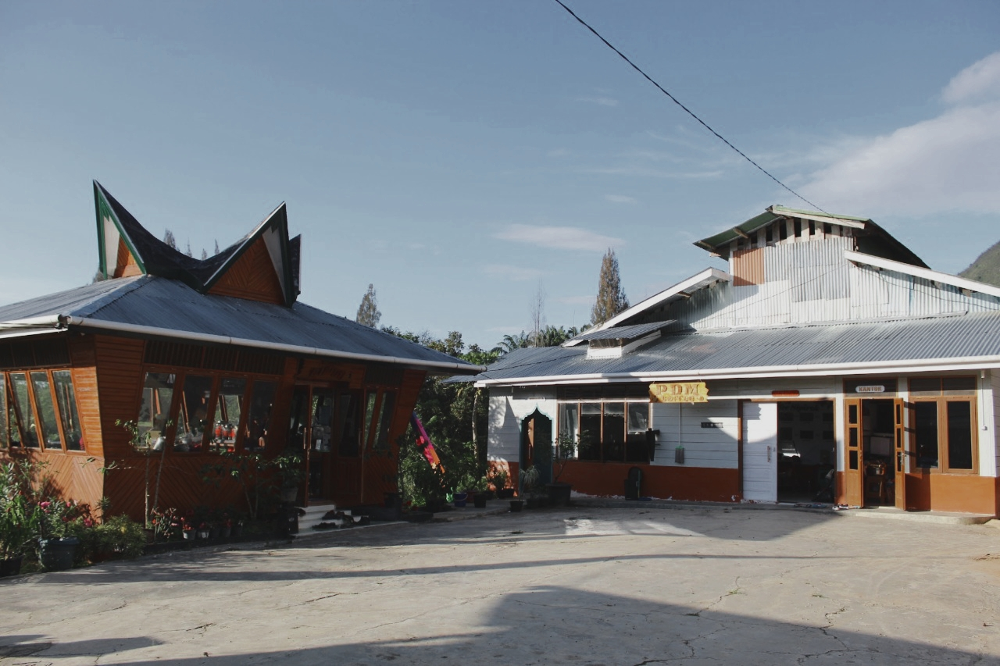

PDM COFFEE
PDM Coffee merupakan industri kopi terpadu milik Pesantren Modern Unggulan Terpadu Darul Mursyid yang beralamat di desa Sidapdap-simanosor Kecamatan Saipar Dolok Hole.

PDM Coffee merupakan industri kopi terpadu milik Pesantren Modern Unggulan Terpadu Darul Mursyid yang beralamat di desa Sidapdap-simanosor Kecamatan Saipar Dolok Hole.
Kabupaten Tapanuli Selatan merupakan salah satu daerah penghasil kopi terbaik di Provinsi Sumatera Utara dan Kabupaten Tapanuli Selatan juga pemilik hak paten atas indikasi geografis arabika Sipirok yang terdiri atas tujuh kecamatan yaitu Angkola Timur, Marancar, Sipirok, Arse, Saipar Dolok Hole dan Aek Bila.
PDM Coffee memiliki lahan perkebunan pribadi dengan luas 50 hektar, luas lahan yang telah ditanami kopi 9 hektar dan berada di ketinggian 1000-1500 m diatas permukaan laut.
PDM kopi menerapkan sistem good agricultural practices dalam budi daya kopi dengan konsep agroforestry dengan pengelolaan dan pemanfaatan hutan sebagai lahan penanaman kopi arabika yang ramah lingkungan.
PDM Coffee bersinergi dengan kelompok tani binaan PDM Coffee yang disebut Simardalihan Natolu yang berjumlah 112 petani kopi. Berkerja sama mulai dari persiapan lahan tanam, pembibitan, pembuatan lubang tanam, penanaman, pemupukan hingga pemangkasan sektor hulu.
PDM copy memproduksi kopi dengan kualitas terbaik dengan bermacam jenis olahan varian kopi berupa Green Beans, Roasted Beans dan Bubuk Kopi. diantaranya premium, specialty, honey, natural, pea berry, prutty, dan natural
Seluruh rangkaian proses PDM coffee menerapkan quality control management system dengan standarisasi internasional